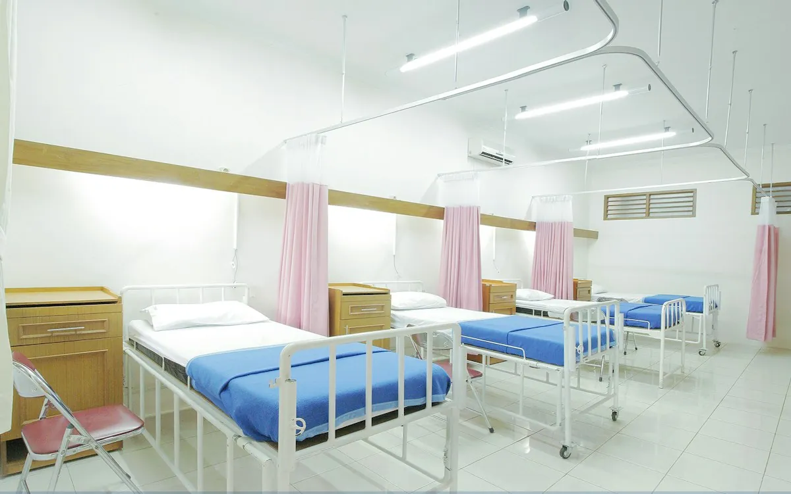
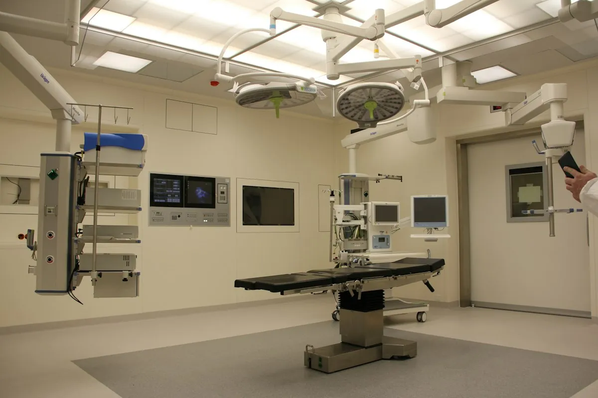

方便 · 一个窗口对接
预约、资料、行程与陪诊由同一团队协调，不必反复说明情况。
ONCOLOGY-LED INTERNATIONAL CARE
华和国际医疗以肿瘤专科为特色，为海外患者提供中国就医协调服务。以广州现代医院为首要合作机构，并可对接中国多家重点医疗机构，协助完成咨询、病历评估、预约与就诊安排。
WHY CHINA · WHY HUAHE
预约、资料、行程与陪诊由同一团队协调，不必反复说明情况。
先评估病历和就诊目标，再集中安排检查与会诊，减少无效等待。
复杂病情由相关专科共同评估，诊疗建议、风险与选择用您理解的语言说明。

OUR APPROACH
国际患者需要的不只是医生，更是一套能跨越语言与地域的照护方式。
围绕同一病例整合临床、影像、病理与相关专业意见。
治疗计划同时考虑功能恢复、营养、心理与长期随访。
整理就诊摘要与资料清单，方便与居住地医生继续沟通。
ONCOLOGY-LED CARE
以广州现代医院为首要合作机构，围绕病种、分期、病理和既往治疗整理资料，先判断是否需要到院、需要补充哪些检查，再讨论可选择的治疗方向。
其他实体肿瘤、血液肿瘤或尚未明确诊断的情况，可在表单中选择“暂不确定，请协助判断”。
DIRECTIONS TO DISCUSS
是否适用，由合作机构专科医生结合分期、病理、体能和既往治疗判断。
肿瘤内科、外科、放疗、影像与病理围绕同一病例讨论。
评估血管性与非血管性介入治疗的适应证与先后顺序。
根据病灶位置与范围，讨论射频、微波或冷冻等局部治疗方向。
评估近距离放射治疗在特定病灶中的可行性与风险。
结合病理分型、基因检测结果和既往用药，讨论系统治疗选择。
同步考虑疼痛管理、营养、中医调理和功能恢复。
以上为可讨论的治疗方向，不代表适合每一位患者。具体方案以合作机构专科医生面诊、检查及多学科讨论结果为准。
SPECIALTY RESOURCES
根据病情对接合适的医疗机构与专科团队，让就医方向更清楚。
CREDENTIALS & CARE PATHWAYS
资质属于首要合作机构广州现代医院；案例只呈现服务路径，不使用患者姓名、照片或疗效数据。
首次通过 JCI 认证，2017 年通过复评审。
中国抗癌协会批准设立的广东培训基地。
长期参与肿瘤学术交流与规范化诊疗协作。
面向马来西亚患者的当地抗癌协作网络。
获批使用港澳已上市临床急需药械的医疗机构。
合作机构公开资料列明的国际学术网络成员身份。
以上资质整理自广州现代医院公开资料，具体以院方及认证机构最新公示为准。
ANONYMIZED CARE PATHWAYS
来自合作机构公开案例的匿名化整理，隐去身份信息，不含生存期或疗效承诺。
COORDINATED DIAGNOSTICS
根据病情需要，协调影像、检验、病理与相关专科资源，让检查真正服务于诊疗判断。
按病情安排影像、超声、内镜与检验检查，并由相关专业共同阅片。
在适应证允许时，讨论创伤更小、恢复路径更清晰的方案。
整合检查报告、治疗记录与出院摘要，支持跨境后续照护。

CARE PROCESS
先选择方便的联系方式，再逐步确认病历、机构和就诊时间。
BEYOND THE APPOINTMENT
围绕出发前、到院期间与回国后的实际需求提供协助。
根据就诊安排说明可提供的预约证明，并协助梳理签证材料、接送机、住宿与家属行程。
就诊前核对保险责任、预授权要求与直付资格，并说明费用构成和可选择的支付方式。
提供中英双语协调；其他语种可在预约时提出，以便评估医学口译安排。
为家属提供就诊动线与生活信息，离院后整理就诊摘要、复诊建议及远程随访安排。
过境免签的适用条件取决于国籍、口岸、停留区域和后续行程。请根据实际就诊计划向使领馆确认签证要求，协调员可同步提供就诊材料说明。
中英双语协调员可协助预约、登记、就诊与出院指导。其他语种请在预约时提出，以便提前评估口译安排。
可以。先提交基本需求和已有资料，协调员会根据科室要求说明需要补充的检查、影像或病理文件。
在病历和诊疗范围明确后，可协助估算费用。直付资格取决于保险公司、具体保单、保障范围与预授权要求，需要逐案核对。
离院前会说明复诊时间与注意事项，并整理就诊摘要。适合远程随访的情况，可协助线上沟通或与居住地医生衔接。
TALK TO US
点击后会为您预选联系方式，只需继续填写基本需求。
CONTACT OUR COORDINATORS
只需四项基本信息。补充说明和病历可以在后续沟通中提供，不必重复填写。